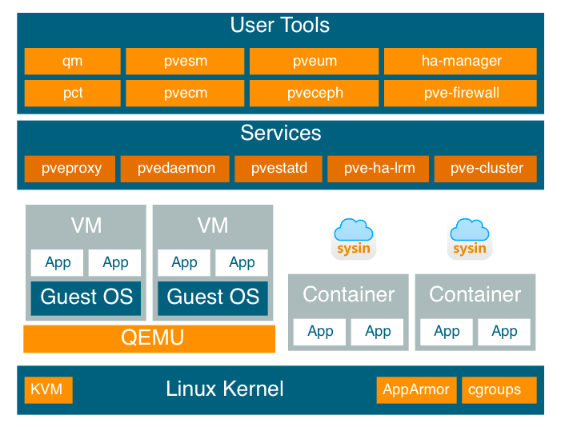

请访问原文链接：Proxmox VE 9.2 发布 - 开源虚拟化管理平台 查看最新版。原创作品，转载请保留出处。
作者主页：sysin.org
Proxmox Virtual Environment 9.2 发布，搭载动态负载均衡器
2026 年 5 月 21 日
奥地利维也纳 – Proxmox Server Solutions GmbH 今日宣布，Proxmox Virtual Environment 9.2 正式发布。这是其面向企业级虚拟化的集成开源平台的最新版本。本次重大更新引入了动态负载均衡器，扩展了软件定义网络（SDN）能力，并支持对自定义 CPU 模型的精细化管理。通过动态工作负载均衡提升资源利用率，并简化复杂的集群维护工作流，Proxmox VE 9.2 帮助企业以更高效率、更低运营复杂度扩展基础设施。

完整更新记录请查阅官方文档。

宣布 Proxmox Virtual Environment 的主要版本 9.0！它基于出色的 Debian 13 “Trixie”，并搭载 6.14.8 内核、QEMU 10.0.2、LXC 6.0.4 和 OpenZFS 2.3.3。
Proxmox VE 9 发布公告
Proxmox Virtual Environment v9.0 发布公告
2025 年 8 月 5 日
Proxmox 非常高兴地宣布 Proxmox Virtual Environment v9.0 的首个稳定版本现已正式发布并可立即下载！
该新版本基于出色的 Debian 13 “Trixie”，但在 Proxmox VE 中默认使用了更先进的 Linux 内核 6.14.8-2 作为稳定版本。
除了核心系统的更新，Proxmox 还对许多集成技术进行了升级。您将会发现关键组件的软件版本已更新，包括 QEMU 10.0.2、LXC 6.0.4、ZFS 2.3.3 和 Ceph Squid 19.2.3，所有这些都已无缝集成。
Proxmox 对本次版本所投入的努力感到无比自豪，迫不及待地希望您来体验。
Proxmox VE 9.0 中包含的一些令人兴奋的新功能包括：
- 以卷链（volume chain）方式实现快照，在支持块存储的任意存储系统（如 iSCSI 和光纤通道连接的 SAN）上提供无厂商绑定的快照支持
- 高可用性（HA）资源到节点、资源之间亲和性规则（affinity rules）
- SDN（软件定义网络）堆栈支持 Fabric 架构
- 使用 Rust 编程语言和 Yew Web 框架开发的现代化移动 Web 界面
- 提供从 8 升级到 9 的完整升级指南 (sysin)
- ZFS 2.3.3：支持在不停机的情况下向 RAIDZ 池中添加新设备
- 以及更多其他改进！
除了这些主要新增内容，还进行了大量性能优化和漏洞修复，进一步提升您的使用体验。完整更新内容请参见发布说明。
常见问题解答（FAQ）
问：我可以使用 apt 将最新的 Proxmox VE 8 升级到 9 吗？
答：可以，请按照以下升级指南操作：
https://pve.proxmox.com/wiki/Upgrade_from_8_to_9
问：我可以通过 apt 将 9.0 beta 版本升级为稳定版 9.0 吗？
答：可以，beta 版本可以通过 apt 升级为稳定版。建议在升级时切换到
pve-enterprise仓库，以获得最稳定的体验。
问：Proxmox VE 8.4 会支持到什么时候？
答：Proxmox VE 8.4 将会提供安全更新和关键漏洞修复支持至 2026 年 8 月。这个支持周期与 Proxmox VE 9.0 的发布重叠约一年，为用户提供充足时间进行升级规划。更多生命周期信息请参考：
https://pve.proxmox.com/pve-docs/chapter-pve-faq.html#faq-support-table
问：为什么 Proxmox VE 9.0 会在 Debian 13 正式发布前就发布？
答：Debian 13 计划在 8 月 9 日（星期六）正式发布。自 5 月 15 日进入“硬冻结”阶段以来，其核心组件已趋于稳定。经过了充分的集成测试和 Beta 期间的社区反馈，对该版本的稳定性非常有信心。由于大多数核心包都由 Proxmox 团队维护，或已被 Debian 的冻结策略锁定，因此没有技术理由延迟发布。
问：我可以在 Debian 13 “Trixie” 上安装 Proxmox VE 9.0 吗？
答：可以，请参见：
https://pve.proxmox.com/wiki/Install_Proxmox_VE_on_Debian_13_Trixie
问：我可以将运行 Ceph Reef 的 Proxmox VE 8.4 集群升级到 v9.0 吗？
答：可以，但需要分两步进行。首先将 Ceph 从 Reef 升级到 Squid，然后再将 Proxmox VE 从 8.4 升级到 9.0。由于涉及大量变更，请务必严格按照升级文档操作：
https://pve.proxmox.com/wiki/Ceph_Reef_to_Squid和https://pve.proxmox.com/wiki/Upgrade_from_8_to_9。
Proxmox VE 简介
Proxmox Virtual Environment，简称 Proxmox VE，是一款功能强大的开源服务器虚拟化平台，尽管它常被 VMware ESXi 和 KVM 等主流虚拟化方案所掩盖，凭借其免费和开源的特性，它非常适合家庭实验室爱好者和中小企业，这类用户的需求通常不同于大型企业。

Proxmox Virtual Environment
计算、网络与存储的一体化解决方案
Proxmox Virtual Environment（Proxmox VE）是一个完整的开源企业虚拟化服务器管理平台。它将 KVM 虚拟机管理程序与 Linux 容器（LXC）、软件定义的存储与网络功能紧密集成于一个平台 (sysin)。借助集成的基于 Web 的用户界面，您可以轻松管理虚拟机与容器、群集高可用性以及集成的灾难恢复工具。
企业级功能与 100% 纯软件架构使 Proxmox VE 成为虚拟化 IT 基础架构的理想选择，能够优化现有资源、提高效率，同时成本最小。您可以轻松虚拟化对性能要求极高的 Linux 和 Windows 应用负载，并可根据需求动态扩展计算与存储资源，确保数据中心具备未来发展所需的灵活性。
准备好使用 Proxmox VE 构建一个开放且面向未来的数据中心了吗？
关于 Proxmox
概况
开源项目 Proxmox VE 拥有庞大的全球用户群，拥有超过 600,000 台主机。该虚拟化平台已被翻译成超过 26 种语言。支持论坛中有超过 88,000 名活跃的社区成员参与并互相帮助 (sysin)。通过使用 Proxmox VE 作为专有虚拟化管理解决方案的替代方案，企业能够集中化和现代化其 IT 基础架构，并将其转变为基于最新开源技术的经济高效且灵活的软件定义数据中心。数以万计的客户依赖 Proxmox Server Solutions GmbH 的企业支持订阅。
关于 Proxmox Virtual Environment
Proxmox Virtual Environment (Proxmox VE) 是用于全包式企业虚拟化的领先开源平台。借助中央 Web 界面，您可以轻松运行虚拟机和容器、管理软件定义的存储和网络功能、高可用性集群以及多个集成的开箱即用工具，例如备份/恢复、实时迁移、复制和防火墙。企业使用功能强大且易于管理的一体化解决方案来满足当今现代数据中心的核心需求 (sysin)。Proxmox VE 凭借其灵活、模块化和开放的架构，使他们能够适应未来的增长。
关于 Proxmox 服务器解决方案
Proxmox 是功能强大且易于使用的开源服务器软件提供商。企业，无论规模、部门或行业，都使用稳定、安全和可扩展的 Proxmox 解决方案来部署高效、敏捷和简化的 IT 基础架构，最大限度地降低总拥有成本，并避免供应商锁定 (sysin)。Proxmox 还提供商业支持和培训服务，以确保其客户的业务连续性。Proxmox Server Solutions GmbH 成立于 2005 年，总部位于奥地利维也纳。
下载地址
Proxmox VE 9.0 ISO Installer
- 百度网盘链接：https://pan.baidu.com/s/1vyGTW5u550yVTeoi76bYaw?pwd=k24x
- Version: 9.0-1
- File Size: 1.64 GB
- Last Updated: August 05, 2025
- SHA256SUM: include
- Based on Debian 13
Proxmox VE 9.1 ISO Installer
- 百度网盘链接：https://pan.baidu.com/s/1fDEkFEmi1iBurxCDvht-eQ?pwd=tps9
- Version: 9.1-1
- File Size: 1.83 GB
- Last Updated: November 19, 2025
- SHA256SUM: include
- Based on Debian 13.2
Proxmox VE 9.2 ISO Installer
- 百度网盘链接：https://pan.baidu.com/s/1vyGTW5u550yVTeoi76bYaw?pwd=k24x
- Version: 9.2-1
- File Size: 1.71 GB
- Last Updated: May 21, 2026
- SHA256SUM: include
- Based on Debian 13.5
相关产品：
- Proxmox Datacenter Manager 1.1 - 集中管理 Proxmox 虚拟化环境
- Proxmox Backup Server 4.2 发布 - 开源备份解决方案
- Proxmox Mail Gateway 9.1 发布 - 开源邮件安全网关
更多：Linux 产品链接汇总

文章用于推荐和分享优秀的软件产品及其相关技术，所有软件默认提供官方原版（免费版或试用版），免费分享。对于部分产品笔者加入了自己的理解和分析，方便学习和研究使用。任何内容若侵犯了您的版权，请联系作者删除。如果您喜欢这篇文章或者觉得它对您有所帮助，或者发现有不当之处，欢迎您发表评论，也欢迎您分享这个网站，或者赞赏一下作者，谢谢！
 支付宝赞赏
支付宝赞赏  微信赞赏
微信赞赏赞赏一下
敬请注册！点击 “登录” - “用户注册”（已知不支持 21.cn/189.cn 邮箱）。 请勿使用联合登录（已关闭）。